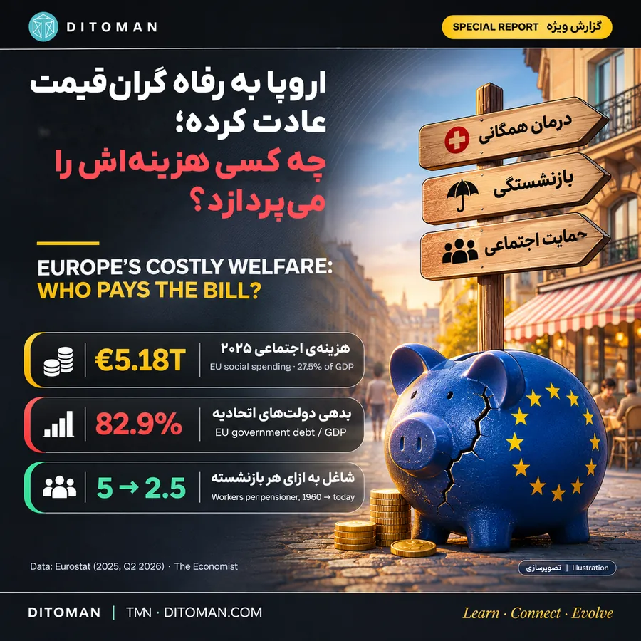
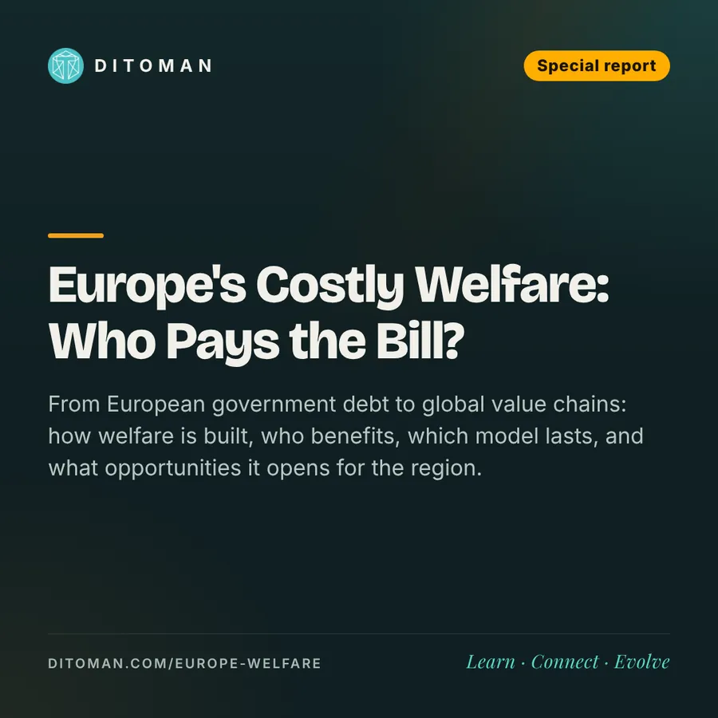

اروپا به رفاه گرانقیمت عادت کرده؛ چه کسی هزینهاش را میپردازد؟
Europe's costly welfare: who pays the bill?
From European government debt to global value chains: how welfare is built, who benefits, which model lasts, and what opportunities it opens for the region.
از بدهی دولتهای اروپایی تا زنجیرهی تولید جهانی؛ رفاه چطور ساخته میشود، چه کسانی از آن سود میبرند، کدام مدل پایدارتر است و چه فرصتهایی برای منطقه میسازد.
اکونومیست این هفته تیتر زد: «اروپا بیش از توانش زندگی کرده؛ حالا وقت پرداخت صورتحسابهاست» The Economist.
درمان همگانی، بازنشستگی مطمئن، تعطیلات طولانی و شهرهای قدمزدنی؛ اروپا را با همینها میشناسیم. اما پول این رفاه از کجا میآید؟ چه کسی صورتحسابش را میپردازد؟ و مهمتر از همه، این ماجرا چه درسی برای ما و چه فرصتی برای کشورهای منطقه دارد؟
در این گزارش سه چیز را از هم جدا میکنیم: واقعیتهای تأییدشده با منبع، پرسشهایی که باید بررسی شوند و تحلیل دیتومان.
۰۱. اعداد چه میگویند؟
نیمی از هزینهی اجتماعی جهان. به گفتهی اکونومیست، اروپا حدود نیمی از کل هزینهی اجتماعی جهان را خرج میکند؛ در حالی که فقط بخش کوچکی از جمعیت دنیا را دارد The Economist. این یک برآورد کلی است؛ تعریف «هزینهی اجتماعی» در کشورها یکسان نیست.
۵٬۱۸۳ میلیارد یورو در یک سال. طبق دادهی رسمی Eurostat، اتحادیهی اروپا در سال ۲۰۲۵ حدود ۵٬۱۸۳ میلیارد یورو برای مزایای حمایت اجتماعی خرج کرده؛ یعنی ۲۷٫۵٪ تولید ناخالص داخلی Eurostat / Brussels Times.
- سالمندی و بازنشستگی: ۲٬۱۵۲ میلیارد یورو؛ یعنی ۴۱٫۵٪ کل این هزینه
- درمان و بیماری: ۱٬۵۵۶ میلیارد یورو؛ یعنی ۳۰٪
- بیشترین سهم از تولید: اتریش ۳۲٫۴٪، فنلاند ۳۲٫۲٪ و فرانسه ۳۲٫۱٪
- کمترین سهم: ایرلند ۱۱٫۷٪ و مالت ۱۳٫۸٪
بدهیای که بالا میرود. بدهی دولتهای اتحادیهی اروپا در سهماههی دوم ۲۰۲۶ به ۸۲٫۹٪ تولید ناخالص رسید؛ یک سال قبل ۸۱٫۴٪ بود Eurostat / Euronews.
| کشور | بدهی دولت به تولید ناخالص (سهماههی دوم ۲۰۲۶) |
|---|---|
| یونان | ۱۴۰٫۸٪ |
| ایتالیا | ۱۳۹٫۹٪ |
| فرانسه | ۱۱۹٫۱٪ |
| میانگین منطقهی یورو | ۸۸٫۸٪ |
| میانگین اتحادیهی اروپا | ۸۲٫۹٪ |
| آلمان (پایان ۲۰۲۵) | حدود ۶۳٪ |
| استونی | ۲۶٫۱٪ |
وقتی بهرهی بدهی از آموزش جلو میزند. وزیر اقتصاد فرانسه گفته هزینهی بهرهی بدهی این کشور در ۲۰۲۷ به حدود ۹۱ میلیارد یورو میرسد؛ بیشتر از آموزش (حدود ۶۳ میلیارد) و دفاع (حدود ۵۳ میلیارد) Acteurs Publics. پیشبینی بودجهی رسمی برای خود دولت مرکزی ۷۴٫۲ میلیارد یورو است Reuters / Arab News؛ تفاوت این دو رقم از دامنهی محاسبه میآید.
۰۲. چه کسی صورتحساب را میپردازد؟
۱. شاغلهای امروز. در بیشتر کشورهای اروپایی، حقوق بازنشستههای امروز را مالیات و حق بیمهی شاغلهای امروز میپردازد. در سال ۱۹۶۰ در اروپای غربی به ازای هر بازنشسته بیش از ۵ نفر کار میکردند؛ امروز حدود ۲٫۵ نفر The Economist. میانهی سنی اتحادیه به ۴۴٫۹ سال رسیده و ۲۲٪ جمعیت بالای ۶۵ سال است Eurostat / Eunews.
۲. نسل بعد. وقتی دولت بخشی از هزینهها را با قرض تأمین میکند، پرداخت اصل و بهرهاش به آینده منتقل میشود. اکونومیست یادآوری میکند که قیمت واقعی خانه در اروپا در یک دهه حدود یکچهارم بالا رفته و نزدیک یکچهارم متولدین دههی ۱۹۸۰ در ۳۰ سالگی هنوز با پدر و مادرشان زندگی میکردند The Economist.
۳. دنیای بیرون؟ یک ادعای رایج این است که رفاه کشورهای ثروتمند با کار ارزان کشورهای دیگر ساخته شده. این را بهعنوان یک پرسش بررسی میکنیم، نه حکمی از پیش گرفتهشده (بخش ۰۴).
۰۳. آیا اروپاییها کمتر کار میکنند؟
بله، اما ماجرا به همین سادگی نیست.
| کشور | ساعت کار سالانهی هر شاغل (OECD) |
|---|---|
| آلمان | ۱٬۳۳۲ |
| سوئد | ۱٬۴۲۱ |
| فرانسه | ۱٬۴۹۸ |
| ژاپن | ۱٬۵۹۸ |
| ایتالیا | ۱٬۷۱۶ |
| پرتغال | ۱٬۷۶۴ |
| آمریکا | ۱٬۸۰۰ |
| کرهی جنوبی | ۱٬۸۳۳ |
| یونان | ۱٬۸۷۴ |
آلمان با کمترین ساعت کار، در هر ساعت حدود ۹۸ دلار (به برابری قدرت خرید) تولید میکند؛ تقریباً هماندازهی آمریکا (حدود ۹۷ دلار) که سالی ۴۷۰ ساعت بیشتر کار میکند. یونان بیشترین ساعت کار را در اتحادیه دارد، اما در تولید هر ساعت جزو پایینترینهاست OECD / Randal Olson.
۰۴. چه کسی از تولید ارزان سود میبرد؟
پژوهشگران دانشگاههای سیراکیوز، برکلی و ارواین زنجیرهی ارزش آیفون ۷ را بررسی کردند The Conversation / Asia Times:
| بخش زنجیره | مبلغ | سهم از قیمت |
|---|---|---|
| قیمت فروش | حدود ۶۴۹ دلار | ۱۰۰٪ |
| سود ناخالص اپل (برند و طراحی) | حدود ۲۸۳ دلار | حدود ۴۴٪ |
| ارزش افزودهی مونتاژ در چین | حدود ۸٫۵ دلار | کمتر از ۱٫۵٪ |
| قطعات (آمریکا، ژاپن، تایوان، کره و…) | بیشتر هزینهی ساخت | — |
اینجا باید صادق باشیم: رفاه اروپا مستقیماً از جیب کارگر آسیایی یا ایرانی پرداخت نمیشود؛ منبع اصلیاش مالیات و حق بیمهی خود اروپاییهاست. اما در زنجیرههای جهانی، ارزش نابرابر تقسیم میشود. سازمان بینالمللی کار در گزارش «چشمانداز اشتغال جهان ۲۰۱۵» نشان داد حضور در زنجیرههای تأمین جهانی بهرهوری را بالا میبرد، اما دستمزد کارگران همیشه همپای آن بالا نمیرود ILO.
کالای وارداتی ارزان بیشک به قدرت خرید خانوارهای اروپایی کمک کرده؛ اما بخش بزرگی از این ارزانی از بهرهوری و مقیاس عظیم تولید در آسیا آمده، نه فقط از دستمزد پایین.
۰۵. همهی اروپا یکی نیست
اکونومیست صریح میگوید: آلمان و کشورهای شمال اروپا کار سخت مالی را انجام دادند؛ بقیه به قرض گرفتن و عقب انداختن تصمیمهای سخت ادامه دادند The Economist.
- آلمان و شمال اروپا: بدهی کنترلشده، بهرهوری بالا و اصلاحات بهموقع در بازار کار و بازنشستگی.
- فرانسه: بالاترین سهم هزینهی اجتماعی در کنار اتریش و فنلاند، بدهی رو به رشد و بحث داغ دربارهی سن بازنشستگی و مالیات.
- ایتالیا و یونان: بدهی نزدیک به ۱۴۰٪ تولید؛ اما یونان بعد از بحران دههی ۲۰۱۰ نشان داد کاهش تدریجی بدهی ممکن است.
- پرتغال: از کشورهای بحرانزدهی دههی ۲۰۱۰ بود و حالا جزو اقتصادهایی است که بدهیاش را پایین آورده.
پس موضوع «فروپاشی رفاه اروپا» نیست؛ ضرورت اصلاح است. و تجربهی همین کشورها نشان میدهد اصلاح ممکن است.
۰۶. چهار نگاه به یک مسئله
- نگاه انضباط مالی (اکونومیست): هزینهها باید اصلاح شود؛ صدای پوپولیستها گفتوگوی جدی دربارهی حسابوکتاب بودجه را خفه کرده و رأیدهندگان اصلاح میخواهند، اما نه به هزینهی خودشان The Economist.
- نگاه «از ثروتمندان مالیات بگیرید»: شعار معترضان پاریس همین بود. در فرانسه پیشنهاد مالیات ۲ درصدی بر داراییهای بالای ۱۰۰ میلیون یورو (معروف به مالیات زوکمن) مطرح شد، اما مجلس فرانسه در بحث بودجه آن را رد کرد Bloomberg Law.
- نگاه جمعیتی: بدون نیروی کار تازه، نسبت شاغل به بازنشسته بهتر نمیشود. مهاجرت سریعترین راه است، اما به گفتهی اکونومیست به رشد احزاب پوپولیست راست هم دامن زده The Economist.
- نگاه «رفاه بهعنوان سرمایهگذاری»: درمان همگانی یعنی نیروی کار سالمتر؛ آموزش رایگان یعنی مهارت بیشتر؛ امنیت اقتصادی یعنی آدمها ریسک میکنند و کسبوکار میسازند. از این نگاه، سؤال «چقدر خرج میکنیم» نیست؛ «چقدر برمیگردد» است.
۰۷. اگر همین درآمد را در ایران و اروپا داشته باشیم
مقایسهی ساده با نرخ ارز گمراهکننده است. یک مقایسهی درست باید اینها را کنار هم بگذارد:
- قدرت خرید: با یک واحد پول، در هر کشور چه چیزهایی میشود خرید؟
- مسکن: چند سال درآمد برای خرید یک خانه لازم است؟
- درمان و آموزش: چقدرش رایگان یا بیمهشده است و چقدرش از جیب خانوار؟
- مالیات: چقدر میدهیم و در عوض چه خدمتی میگیریم؟
- پسانداز: آیا پول جمعشده ارزشش را حفظ میکند؟
در اروپا مالیات بالاست، اما بخشی از آن به شکل درمان، آموزش و بازنشستگی برمیگردد. در ایران مالیات مستقیم کمتر است، اما تورم بالا عملاً مثل یک مالیات پنهان روی پسانداز عمل میکند.
سازگاری با کمبود، با کارایی اقتصادی فرق دارد. ما ایرانیها در کمخرج زندگی کردن استادیم: کالا را تعمیر میکنیم بهجای تعویض، سفر را حذف میکنیم و هزینهها را سخت مدیریت میکنیم. این مهارت ارزشمندی است؛ اما وقتی خانوادهای ناچار میشود درمان یا تغذیهی خوب را حذف کند، این دیگر صرفهجویی نیست، فقر پنهان است.
مدل سوم: شرق آسیا. کرهی جنوبی و تایوان در دهههای رشدشان بیشتر روی آموزش، بهداشت پایه و زیرساخت سرمایهگذاری کردند تا پرداخت نقدی گسترده؛ پژوهشگران به این الگو «رفاه مولد» میگویند. نتیجه، جهش بزرگ در بهرهوری بود. اما این مدل هم بیهزینه نبود: امروز همین کشورها با پیری سریع جمعیت، مسکن گران و کمترین نرخ زادوولد دنیا روبهرو هستند. هیچ مدل کاملی وجود ندارد.
۰۸. فرصتها برای کشورهای منطقه
اروپای پیر و پرهزینه فقط یک مسئله نیست؛ یک بازار بزرگ هم هست. کشورهای منطقه، از ترکیه و قفقاز تا خلیج فارس و آسیای مرکزی، و در بلندمدت ایران، میتوانند در این زنجیره نقش داشته باشند:
- ۱. نیروی کار سلامت و مراقبت. سازمان جهانی بهداشت پیشبینی میکند منطقهی اروپا تا ۲۰۳۰ با کمبود حدود ۹۵۰ هزار نیروی سلامت روبهرو شود. از ۲۰۱۴ تا ۲۰۲۳ تعداد پزشکان خارجیآموخته ۵۸٪ و پرستاران خارجیآموخته ۶۷٪ بیشتر شده است WHO / Euronews. سازمان کار اروپا هم سلامت و مراقبت را محور اصلی کمبود نیروی کار میداند؛ بخشی با حدود ۲۵ میلیون شاغل ELA.
فرصت: آموزش پرستاری و مراقبت با استاندارد و زبان اروپایی، مدلهای «مهاجرت چرخشی» که مهارت را به کشور برمیگرداند و پزشکی از راه دور. - ۲. گردشگری سلامت. وقتی صف درمان در اروپا طولانی و هزینهها بالاست، بیمار به جایی میرود که درمان باکیفیت سریعتر و ارزانتر باشد. ترکیه در ۲۰۲۳ حدود ۳٫۱ میلیارد دلار از ۱٫۶۵ میلیون بیمار خارجی درآمد داشت و برای ۲۰۲۸ هدف ۲۰ میلیارد دلار گذاشته است Daily Sabah.
فرصت: ایران هم پزشکان حاذق و هزینهی رقابتی دارد و همین حالا برای بیماران کشورهای همسایه مقصد درمان است؛ کیفیت خدمات، اعتبارنامهی بینالمللی و تجربهی بیمار کلید رشد است. - ۳. دارو و مواد اولیهی دارویی. اتحادیهی اروپا با «قانون داروهای حیاتی» میخواهد زنجیرهی تأمینش را متنوع کند؛ حدود ۸۰٪ مواد اولیهی دارویی وارداتیاش از پنج کشور میآید و سهم چین بهتنهایی حدود ۴۵٪ است Council of the EU.
فرصت: تولیدکنندههایی با استاندارد GMP اروپایی در منطقه میتوانند تأمینکنندهی جایگزین باشند. صنعت داروی ایران پایهی داخلی قوی دارد؛ رسیدن به این بازار به استاندارد، شفافیت و همکاری بینالمللی نیاز دارد. - ۴. اقتصاد نقرهای. یک مطالعهی کمیسیون اروپا اندازهی «اقتصاد نقرهای»، یعنی هزینهی افراد بالای ۵۰ سال، را برای ۲۰۲۵ حدود ۵٫۷ تریلیون یورو پیشبینی کرده بود European Commission study / ICT&health.
فرصت: وسایل کمکحرکتی، خانهی هوشمند برای سالمندان، اپهای سلامت، غذای سالم و آماده، گردشگری آرام و طولانیمدت. - ۵. خدمات دیجیتال از راه دور. کمبود نیرو در اروپا تقریباً در همهی شغلها دیده میشود ELA. کاری که میشود از راه دور انجام داد، از برنامهنویسی و طراحی تا پشتیبانی و تحلیل داده، از مرز عبور میکند.
فرصت: شرکتهای فناوری منطقه و استعدادهای ایرانی، بهویژه از طریق شبکهی ایرانیان خارج از کشور، میتوانند پل این خدمات باشند. باید صادق بود: برای شرکتهای داخل ایران، محدودیتهای پرداخت و قانونی هنوز مانع جدی است. - ۶. غذا و محصولات کشاورزی باکیفیت. جمعیت مسنتر و پرسرانهتر، مشتری محصولات سالم، ارگانیک و برنددار است؛ از زعفران و پسته تا خشکبار و میوهی خشک، به شرط استاندارد و ردیابی کامل.
این بخش تحلیل دیتومان است و ارقام آن از منابع ذکرشده آمده؛ هر فرصت به بررسی قانونی و بازار هر کشور نیاز دارد.
۰۹. نگاه دیتومان: درس این ماجرا برای ما
- «مجانی» وجود ندارد. هر خدمت رایگانی را بالاخره کسی، امروز یا فردا، میپردازد.
- آیندهی مالیات را فقط به دیگران نسپار. حتی در ثروتمندترین کشورهای دنیا، جوانها کنار بیمهی دولتی پسانداز شخصی هم میکنند. یک برنامهی پسانداز بلندمدت و متنوع برای خودت داشته باش.
- بهرهوری کلید است. برای یک کشور و برای یک آدم، کار هوشمندانهتر از کار طولانیتر ارزش میسازد.
- بالا رفتن در زنجیرهی ارزش ممکن است. چین، کره و ترکیه نشان دادند میشود از مونتاژ و خدمات ارزان به برند و فناوری رسید.
- اصلاح، از فروپاشی ارزانتر است. تجربهی آلمان، شمال اروپا و پرتغال نشان میدهد تصمیم سخت اما بهموقع، آیندهی روشنتری میسازد.
بیشتر بخوانید: گزارشهای دیتومان
- تو عقب نیفتادهای؛ زمین مسابقه جلوتر دویده
- صنعت تازه: ساختن هوش مصنوعی برای کسبوکارها
- ۳۰ سال، دو خط: دود خم شد، خورشید و باد اوج گرفت
- اقتصاد خانوار
- ایرانی که ساخته شد
منابع
- The Economist: Europe has been living beyond its means. Now the bills are due (۱۰ نوامبر ۲۰۲۶)
- The Economist: How the boomers screwed Europe… (۲۸ مه ۲۰۲۶)
- Eurostat: هزینهی حمایت اجتماعی ۲۰۲۵ (Brussels Times)
- Eurostat: بدهی دولتها، سهماههی دوم ۲۰۲۶ (Euronews)
- Eurostat: ساختار سنی جمعیت ۲۰۲۵ (Eunews)
- Acteurs Publics: بهرهی بدهی فرانسه ۲۰۲۷ · Reuters / Arab News: بودجهی ۲۰۲۷ فرانسه
- OECD: ساعت کار سالانه · OECD: تولید در هر ساعت (Randal Olson)
- Dedrick, Linden, Kraemer: زنجیرهی ارزش آیفون
- ILO: World Employment and Social Outlook 2015
- WHO Europe: نیروی سلامت (Euronews) · European Labour Authority: گزارش کمبود نیروی کار ۲۰۲۵
- Daily Sabah: گردشگری سلامت ترکیه
- Council of the EU: قانون داروهای حیاتی
- مطالعهی کمیسیون اروپا دربارهی اقتصاد نقرهای (ICT&health)
- Bloomberg Law: رد مالیات ثروت در فرانسه
آخرین بازبینی: ۲۱ آبان ۱۴۰۵. دیتومان یک رسانهی آموزشی است و این گزارش توصیهی سرمایهگذاری نیست.